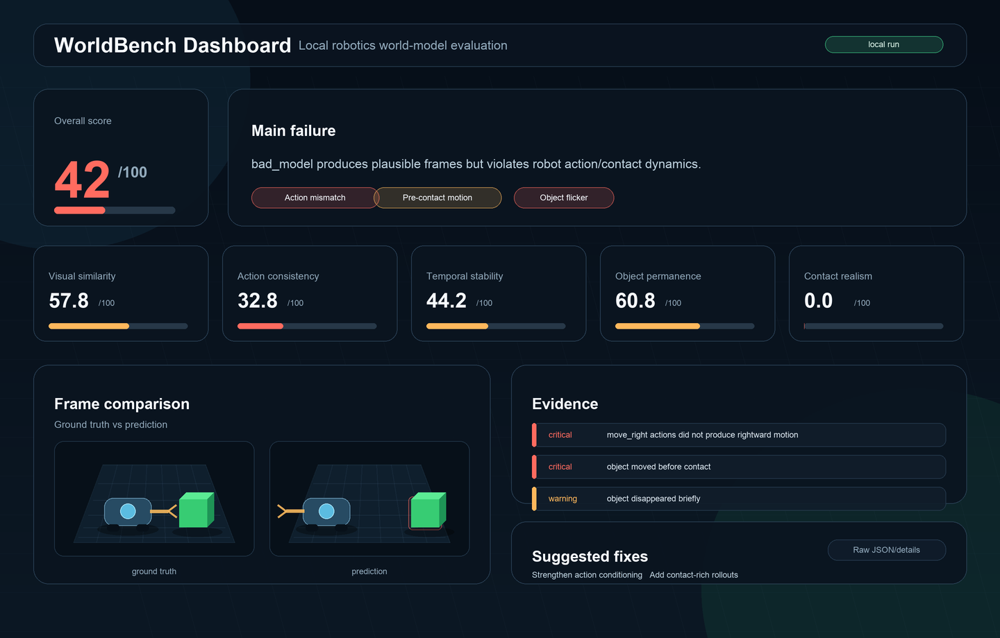

worldbench · v0.4.1 · Apache-2.0
Did the new checkpoint actually improve, and what got worse?
Ayush Adi · github.com/tigee1311/worldbench · worldbench.xyz
The problem
01
02
03
Nobody knows which episodes silently got worse. Teams training video world models have nothing like pytest for checkpoints.
2
How it works
Same ground-truth episodes, every run
eval-batch
baseline checkpoint
eval-batch
candidate checkpoint
gate
Per-episode and per-horizon deltas
No regressions
Regressed episodes named
The gate hard-fails if episode suites differ, dataset hashes mismatch, metric configs drift, or coverage silently drops. Every result is re-verifiable later with verify-run.
3
Proof on a real model
Composite score
85.67 → 87.28
+1.61, candidate improved
Episodes improved / regressed
9 / 1
Out of 10 fixed episodes
Regression surfaced
−0.33
episode_002, not hidden in the aggregate
Strict gate: PASS
Engineering threshold: PASS
Tesla T4 · pinned checkpoint SHAs · per-episode seeds
Baseline nanowm-b2-rt1-abl-pred-v-50k → candidate nanowm-b2-rt1-300k. A fixed-suite validation proof, not a public model ranking.
Per-episode deltas
| Episode | Baseline | Candidate | Change |
|---|---|---|---|
| episode_008 | 78.74 | 84.96 | +6.22 |
| episode_007 | 85.90 | 87.99 | +2.09 |
| episode_001 | 86.23 | 88.25 | +2.02 |
| Episode | Baseline | Candidate | Change |
|---|---|---|---|
| episode_002 | 87.26 | 86.93 | −0.33 |
One episode out of ten got worse. The strict gate still passed because the regression is under threshold, but it is reported by name so an engineer can look at it.
Source: artifacts/checkpoint_validation/comparison_summary.json
Diagnosis, not just a number
| Metric | Weight | Availability |
|---|---|---|
| Visual Similarity (MSE + PSNR + SSIM) | 25% | Any aligned RGB video pair |
| Temporal Stability (flicker, jumps) | 20% | Any predicted video with 2+ frames |
| Action Consistency | 30% | Requires action labels or an action adapter |
| Object Permanence | 15% | Requires object tracking (synthetic suites today) |
| Contact Realism | 10% | Requires robot + object tracking (synthetic suites today) |
Metrics without their required signals report N/A, never a fake zero. The composite renormalizes over what is actually available, and coverage is reported in every result.
Availability rules per metric: docs/METRIC_CARDS.md
Dashboard

7
CI integration
- uses: tigee1311/worldbench@main
with:
ground-truth: eval_suite
predictions: candidate_predictions
baseline: artifacts/approved-baseline.json
config: worldbench.yml
skip-context: "4"
Install, evaluate, gate, fail the PR on regression
Strict config match and dataset hash checks by default
Re-verify any past result with verify-run
pip install "worldbench[video]" for local use, 11 CLI commands
Details: docs/CI_INTEGRATION.md · Importers for LeRobot datasets and NanoWM RT-1
Scope and roadmap
docs/ROADMAP.md separates verified behavior from future work. Nothing unimplemented is marked done.
Get started
python -m pip install "worldbench[video]"
worldbench eval-videos --demo --output results/demo
Repo
github.com/tigee1311/worldbench
PyPI
pypi.org/project/worldbench
Site
worldbench.xyz
Issues and pilot requests welcome, especially from teams already producing saved world-model predictions.